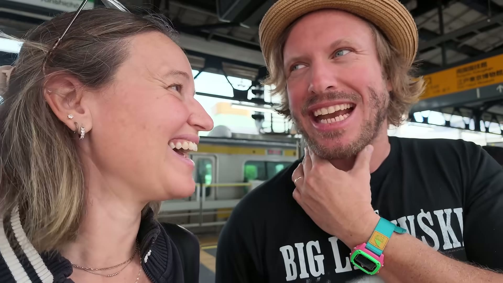
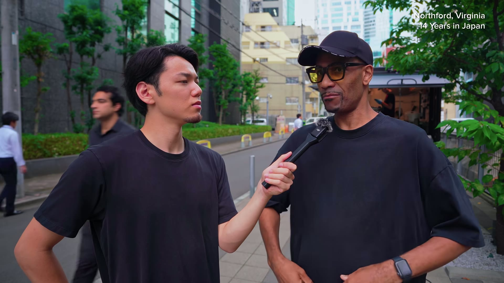
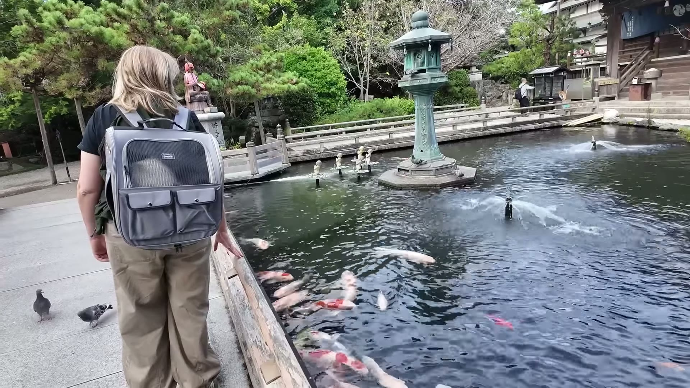

そして 人生が
変わる
変わる
20代、初めてのひとり旅
引用: Kalani James Lenehan
予約は 出発の1週間前
泊まるのは カプセルホテル
引用: Kalani James Lenehan
迷った先が スクランブル交差点
「これは 現実とは思えない」
引用: Kalani James Lenehan
「天国にいるみたいだ」
唐揚げも餃子も 全部で15ドル
引用: Kalani James Lenehan
日本人の友人が 泊めてくれた
3晩も 見返りなしで
家族は 車まで貸してくれた
旅
旅の最後の、言葉
引用: Kalani James Lenehan
人生で最高の旅だった
美しすぎて 何度も泣いた
涙の、理由
引用: Kalani James Lenehan
この旅は 人生を変えた
世界の見方も 人の見方も
そして 自分自身の見方も
安心が 人を
ひらく
ひらく
引用: Those Happy Days
終 章
守ってきたのは、あなた
— この日常は、世界の奇跡
当たり前は、世界の非日常
作ったのは、特別な誰かじゃない
毎日の、小さな積み重ね
日
あなたの日常が、誰かを変える
4人の物語

01
初来日の夫婦
48時間で 恋に落ちた

02
在住アメリカ人
もう 戻れない

03
喪失を抱えた人
日本に 救われた

04
20代の一人旅
人生が 変わった
あなたの“当たり前”は、
誰かの奇跡かもしれない
誰かの奇跡かもしれない
▼ 外国人に日本を褒められた体験、コメントで聞かせてください
ご視聴 ありがとうございました
チャンネル登録で、次の物語をお見逃しなく